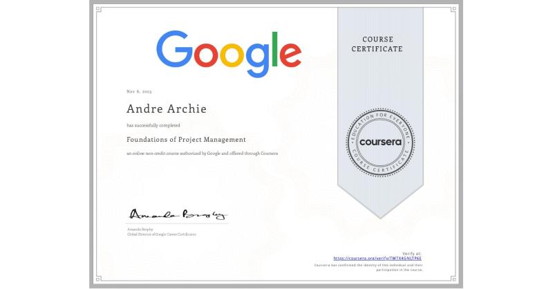

Andre Rexdian Archie
Summary
I'm Andre Rexdian Archie, a seasoned PHP backend developer with a rich
history of crafting robust and scalable solutions over the past 5 years.
My expertise lies in utilizing PHP and MYSQL, executing basic Linux
commands, and possessing a solid grasp of server infrastructure.
Education
-
Murdoch University
-
Bachelor of Science - BS, Mobile and Web Application Development
-
Republic Polytechnic
- High School Diploma, Mobile Software Development with Merit
Work Experience
-
Senior Developer, Technology - API
Oct 2021 - Present
-
Analyzed project requirements and formulated effective solutions.
-
Played a pivotal role as the go-to person for the Business
Development Team.
-
Provided essential support for System Integration Testing (SIT) and
User Acceptance Testing (UAT) phases, ensuring thorough and accurate
testing.
-
Simplified complex technical terminology for clear understanding by
stakeholders.
- Managed and maintained a PHP legacy system.
- Actively contributed as a team player.
- Took charge of SSL exchange key renewal processes.
-
Provided mentorship to a junior developer, fostering their
professional growth.
-
Collaborated closely with Customer Service to deliver tailored
solutions to clients.
-
Developer, Technology - API
Oct 2018 - Sep 2021
-
Built a REST API utilizing PHP and curl for seamless communication between systems.
-
Implemented a SOAP API using Soap Client to facilitate integration with external services.
-
Established and updated API specifications to guide front-end developers in utilizing APIs effectively.
-
Collaborated closely with the Business Development Team to address daily operational tasks and ongoing business needs.
- Took ownership of maintaining and enhancing firewall rules to ensure network security and compliance.
- Demonstrated effective collaboration with diverse stakeholders, ensuring project success
Skills
- Team Player: ⭐️⭐️⭐️⭐️⭐️
- Coding: ⭐️⭐️⭐️
- Collaboration: ⭐️⭐️⭐️⭐️
- Documentation: ⭐️⭐️⭐️⭐️⭐️
Awards and Certifications
-
Foundation of Project Management

Other